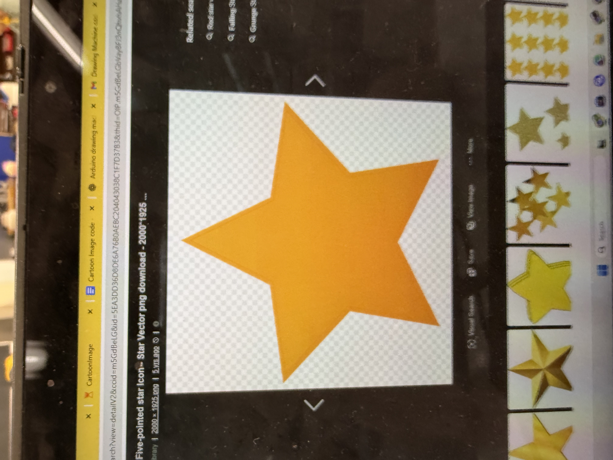
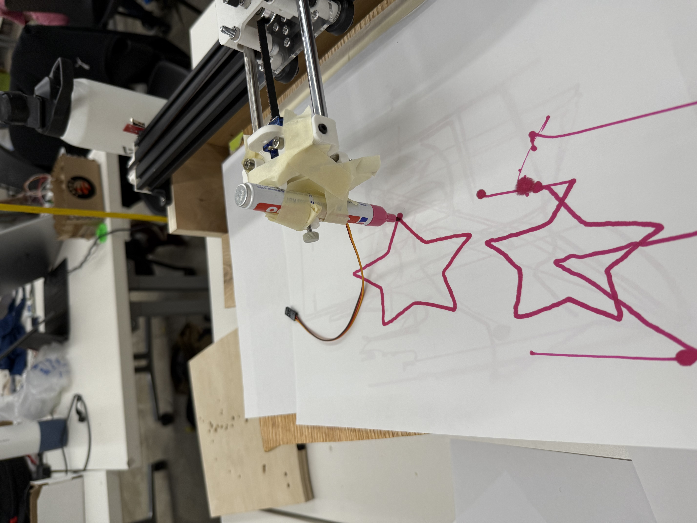

<div class="textcontainer">
<p class="margin"> </p>
<h3>Weeks 10-12: Machine Building</h3>
<h4>Assignment: Build a Drawing Robot. Group Members: Mazen, Canden, Helena</h4>
<p class="margin"> </p>
For this project, we wanted to be a little ambitious. We wanted to have our drawing robot take a picture, render the image, and then draw it out. This turned out to be very challenging as we struggled to even program our robot to draw simple shapes such as circles.
<p class="margin"> </p>
Code for basic drawing machine coordinates/controls:
<html lang="en">
<head>
<meta charset="UTF-8">
<title>Code Scroller</title>
<style>
.code-box {
width: 90%;
max-width: 800px;
height: 300px;
overflow: auto;
background-color: #1e1e1e;
color: #dcdcdc;
padding: 15px;
border-radius: 8px;
font-family: monospace;
white-space: pre;
margin: 20px auto;
box-shadow: 0 0 10px rgba(0,0,0,0.2);
}
</style>
</head>
<body>
<div class="code-box">
<code>
#include <AccelStepper.h>
const int X_STEP_PIN = 14;
const int X_DIR_PIN = 12;
const int Y_STEP_PIN = 26;
const int Y_DIR_PIN = 27;
AccelStepper stepperX(AccelStepper::DRIVER, X_STEP_PIN, X_DIR_PIN);
AccelStepper stepperY(AccelStepper::DRIVER, Y_STEP_PIN, Y_DIR_PIN);
const int MAX_SPEED = 1000;
const int ACCEL = 500;
void setup() {
Serial.begin(115200);
stepperX.setMaxSpeed(MAX_SPEED);
stepperY.setMaxSpeed(MAX_SPEED);
stepperX.setAcceleration(ACCEL);
stepperY.setAcceleration(ACCEL);
}
void loop() {
// Handle motion
stepperX.run();
stepperY.run();
// Handle input
if (Serial.available()) {
String input = Serial.readStringUntil('\n');
int commaIndex = input.indexOf(',');
if (commaIndex > 0) {
float x = input.substring(0, commaIndex).toFloat();
float y = input.substring(commaIndex + 1).toFloat();
stepperX.moveTo((long)x);
stepperY.moveTo((long)y);
}
}
}
</code>
</div>
</body>
</html>
<p class="margin"> </p>
Calibrating the drawing machine by homing onto the end-points:
<p class="margin"> </p>
<video width="640" height="360" controls>
<source src="homing.mp4" type="video/mp4">
</video>
<p class="margin"> </p>
Basic circle drawing:
<p class="margin"> </p>
<video width="640" height="360" controls>
<source src="circledraw.mp4" type="video/mp4">
</video>
<p class="margin"> </p>
Filling the circle:
<p class="margin"> </p>
<video width="640" height="360" controls>
<source src="circlefill.mp4" type="video/mp4">
</video>
<p class="margin"> </p>
Track mouse movements and sending data to drawing machine through pyserial:
<p class="margin"> </p>
<video width="640" height="360" controls>
<source src="mousetrack.mp4" type="video/mp4">
</video>
<p class="margin"> </p>
Mouse tracker code:
<html lang="en">
<head>
<meta charset="UTF-8">
<title>Code Scroller</title>
<style>
.code-box {
width: 90%;
max-width: 800px;
height: 300px;
overflow: auto;
background-color: #1e1e1e;
color: #dcdcdc;
padding: 15px;
border-radius: 8px;
font-family: monospace;
white-space: pre;
margin: 20px auto;
box-shadow: 0 0 10px rgba(0,0,0,0.2);
}
</style>
</head>
<body>
<div class="code-box">
<code>
import pygame
import serial
import time
# --- Setup Serial Communication ---
ser = serial.Serial('COM6', 115200) # Change COM port as needed
time.sleep(2) # Wait for Arduino to initialize
# --- Window Settings ---
WIDTH, HEIGHT = 800, 600
SCALE_X, SCALE_Y = 1.0, 1.0 # Adjust based on how far motors should move
pygame.init()
screen = pygame.display.set_mode((WIDTH, HEIGHT))
pygame.display.set_caption("Mouse Follower")
running = True
clock = pygame.time.Clock()
while running:
screen.fill((255, 255, 255)) # White background
for event in pygame.event.get():
if event.type == pygame.QUIT:
running = False
# Get mouse position
x, y = pygame.mouse.get_pos()
# Draw red circle at cursor
pygame.draw.circle(screen, (255, 0, 0), (x, y), 5)
# Send coordinates to Arduino
mapped_x = int((x - WIDTH // 2) * SCALE_X)
mapped_y = int((y - HEIGHT // 2) * SCALE_Y)
coord_str = f"{mapped_x},{mapped_y}\n"
ser.write(coord_str.encode())
pygame.display.flip()
clock.tick(60)
pygame.quit()
ser.close()
</code>
</div>
</body>
</html>
<p class="margin"> </p>
To take a photo for our drawing machine to draw, we used python cv2 to capture and process the image, as well as pyserial to send live serial updates to the drawing machine.
<p class="margin"> </p>
Image processing version 1:
<p class="margin"> </p>
<video width="640" height="360" controls>
<source src="imageprocessingv1.mp4" type="video/mp4">
</video>
<p class="margin"> </p>
Version 1 of image processing left a lot to desire. Although the application was able to take a photo and apply some filters to it, it was unable to convert the image into coordinates. As you can see in the video above, the coordinates only showed the border of the image rather than the actual detail. To combat this, I tried converting the image to binary instead to make it simpler to convert into coordinates, leading us to image processer #2.
<p class="margin"> </p>
Image processing version 2:
<p class="margin"> </p>
<video width="640" height="360" controls>
<source src="imageprocessingv2.mp4" type="video/mp4">
</video>
<p class="margin"> </p>
By changing the image into binary, the program successfully converted the image into coordinates that successfully captured most of the important details of the image. However, a new problem emerged with this version, which is that the lines are very rough and complex-too complex for our drawing machine to draw out. Therefore, I needed to make a third version to make the lines smoother.
<p class="margin"> </p>
Image processing version 3:
<p class="margin"> </p>
<video width="640" height="360" controls>
<source src="imageprocessingv3.mp4" type="video/mp4">
</video>
<p class="margin"> </p>
File processor code:
<html lang="en">
<head>
<meta charset="UTF-8">
<title>Code Scroller</title>
<style>
.code-box {
width: 90%;
max-width: 800px;
height: 300px;
overflow: auto;
background-color: #1e1e1e;
color: #dcdcdc;
padding: 15px;
border-radius: 8px;
font-family: monospace;
white-space: pre;
margin: 20px auto;
box-shadow: 0 0 10px rgba(0,0,0,0.2);
}
</style>
</head>
<body>
<div class="code-box">
<code>
import cv2
import numpy as np
import matplotlib.pyplot as plt
import serial
import time
import os
# === CONFIGURATION ===
USE_WEBCAM = False # ← Set to True for webcam, False for imported image
IMAGE_PATH = r"C:\Users\27StephenP\Downloads\star.png" # ← Path to imported image if not using webcam
IMAGE_W = 512
DRAW_MM = 100
STEPS_PER_MM = 4
SERIAL_PORT = 'COM5'
BAUDRATE = 115200
DELAY = 0.01
# === 1. Load Image ===
if USE_WEBCAM:
cap = cv2.VideoCapture(0)
cap.set(cv2.CAP_PROP_AUTO_EXPOSURE, 0.25)
cap.set(cv2.CAP_PROP_EXPOSURE, -6)
ret, frame = cap.read()
cap.release()
if not ret:
raise Exception("❌ Failed to capture image")
cv2.imwrite("captured_photo.jpg", frame)
img = frame
else:
img = cv2.imread(IMAGE_PATH)
if img is None:
raise Exception(f"❌ Failed to load image: {IMAGE_PATH}")
# === 2. Resize & Convert ===
img = cv2.resize(img, (IMAGE_W, IMAGE_W))
img_rgb = cv2.cvtColor(img, cv2.COLOR_BGR2RGB)
# === 3. Denoise & Enhance ===
denoised = cv2.bilateralFilter(img_rgb, d=9, sigmaColor=75, sigmaSpace=75)
gray = cv2.cvtColor(denoised, cv2.COLOR_RGB2GRAY)
gray = cv2.equalizeHist(gray)
gray = cv2.medianBlur(gray, 3)
# === 4. Adaptive Canny Edge Detection ===
v = np.median(gray)
sigma = 0.33
lower = int(max(0, (1.0 - sigma) * v))
upper = int(min(255, (1.0 + sigma) * v))
edges = cv2.Canny(gray, lower, upper)
# Optional: close small gaps
kernel = np.ones((2, 2), np.uint8)
edges = cv2.morphologyEx(edges, cv2.MORPH_CLOSE, kernel, iterations=1)
# Preview & save
plt.figure(figsize=(6, 6))
plt.imshow(edges, cmap='gray')
plt.title("Adaptive Canny Edge Mask")
plt.axis("off")
plt.show()
cv2.imwrite("edge_mask.jpg", edges)
# === 5. Contour Extraction ===
contours, _ = cv2.findContours(edges, cv2.RETR_EXTERNAL, cv2.CHAIN_APPROX_NONE)
def pixel_to_steps(x, y):
x_mm = x / IMAGE_W * DRAW_MM
y_mm = y / IMAGE_W * DRAW_MM
return int(x_mm * STEPS_PER_MM), int(y_mm * STEPS_PER_MM)
# === 6. Chaikin’s Subdivision ===
def chaikin(path, iterations=3, closed=True):
for _ in range(iterations):
newp = []
L = len(path)
for i in range(L):
p0 = np.array(path[i])
p1 = np.array(path[(i+1)%L]) if closed else np.array(path[i+1]) if i+1&lt;L else None
if p1 is None:
newp.append(tuple(p0))
break
Q = (0.75*p0 + 0.25*p1).astype(int)
R = (0.25*p0 + 0.75*p1).astype(int)
newp.append(tuple(Q))
newp.append(tuple(R))
path = newp
return path
# === 7. Build & Smooth Step Paths ===
step_paths = []
for cnt in contours:
pts = [tuple(pt[0]) for pt in cnt]
if len(pts) &lt; 30:
continue
raw_steps = [pixel_to_steps(x, y) for x, y in pts]
smooth = chaikin(raw_steps, iterations=3, closed=True)
step_paths.append(smooth)
# === 8. Save to CSV ===
with open("drawing_coordinates.csv", "w") as f:
for path in step_paths:
for x, y in path:
f.write(f"{x},{y}\n")
f.write("BREAK\n")
# === 9. Plot Final Paths ===
paths = []
cur = []
with open("drawing_coordinates.csv", "r") as f:
for line in f:
line = line.strip()
if line == "BREAK":
if cur:
paths.append(cur)
cur = []
else:
x_s, y_s = line.split(",")
cur.append((int(x_s), int(y_s)))
if cur:
paths.append(cur)
plt.figure(figsize=(8, 8))
for path in paths:
xs, ys = zip(*path)
plt.plot(xs, ys, color='black')
plt.gca().invert_yaxis()
plt.axis("equal")
plt.grid(True)
plt.title("🖋️ High-Detail Smoothed Paths")
plt.show()
# === 10. Send to Arduino ===
def send_to_arduino(paths, port=SERIAL_PORT, baudrate=BAUDRATE, delay=DELAY):
try:
ser = serial.Serial(port, baudrate)
time.sleep(2)
print("✅ Serial connected. Sending...")
for path in paths:
if not path:
continue
x0, y0 = path[0]
ser.write(b"PEN_UP\n")
ser.write(f"MOVE X{x0} Y{y0}\n".encode()); time.sleep(delay)
ser.write(b"PEN_DOWN\n")
for x, y in path[1:]:
ser.write(f"MOVE X{x} Y{y}\n".encode()); time.sleep(delay)
ser.write(b"PEN_UP\n"); time.sleep(delay)
ser.close()
print("✅ Done.")
except Exception as e:
print(f"❌ Serial error: {e}")
send_to_arduino(paths)
</code>
</div>
</body>
</html>
<p class="margin"> </p>
Finally, the program was able to find a balance between simplicity and complexity. The new coordinates generated by the program wasn't lacking detail, but also didn't contain super rough and complex lines, which was perfect for drawing.
<p class="margin"> </p>
Now that the image processing was working for images captured directly from the webcam, we decided that the next step for the drawing machine was to allow us to import a file, have it processed, and have the machine draw it out. Basically like a file uploader. I had to make a lot of adjustments to the movement of the stepper motor, rescale the image, and add much more code in order to get the drawing machine finally working.
<p class="margin"> </p>
Original image:
<p class="margin"> </p>

<p class="margin"> </p>
Image processing of the star:
<p class="margin"> </p>
<video width="640" height="360" controls>
<source src="fileuploader.mp4" type="video/mp4">
</video>
<p class="margin"> </p>
Finished drawing:
<p class="margin"> </p>
<video width="640" height="360" controls>
<source src="drawingstar.mp4" type="video/mp4">
</video>
<p class="margin"> </p>

<p class="margin"> </p>
Reflection: When me and my group members were first assigned this assignmenet, I immediately got started on the image processing as I felt the most confident in the coding part of the project, and my team members also focused on specific aspects of the project that they thought they could do well. Looking back, I think that we could've delegated tasks more effectively so that we could work as a group, rather than just working individually and hoping that it all fits together. If I could start this project over, I would prioritize communicating with my team members. I would start the project by creating a detailed to-do list, and assign tasks to each memeber so that we had clear objectives to work towards. I would also save the more complicated features such as image processing for later, and just get a working drawing machine first. Despite the many challenges we faced, I am proud that we were able to get a working final product.
</div>